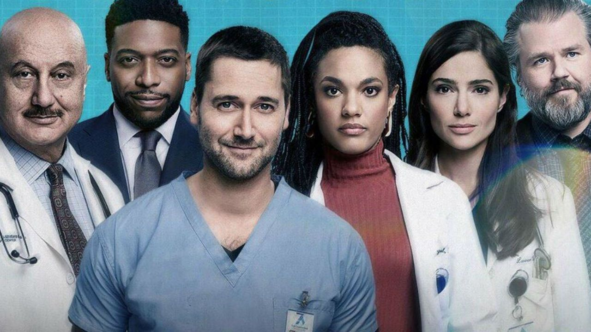

1. New Amsterdam
2.The Good Doctor
3.Anatomia de Grey
4. Besos al aire
5.Madres
6.Mucize Doktor
7.The resident
| | 
Después de verle como el malvado Tom Keen en The Blacklist junto a James Spader, Ryan Eggold se metió en la piel del doctor Max Goodwin en la ficción creada por David Schulner en 2018. Con tres temporadas emitidas en Fox –las dos primeras también pueden verse en Netflix y Prime Video–, esta serie sigue a Goodwin, cuando se convierte en el director del hospital público más antiguo de los Estados Unidos –un centro médico real llamado Bellevue, en Nueva York –, para reformar su pésimas condiciones |